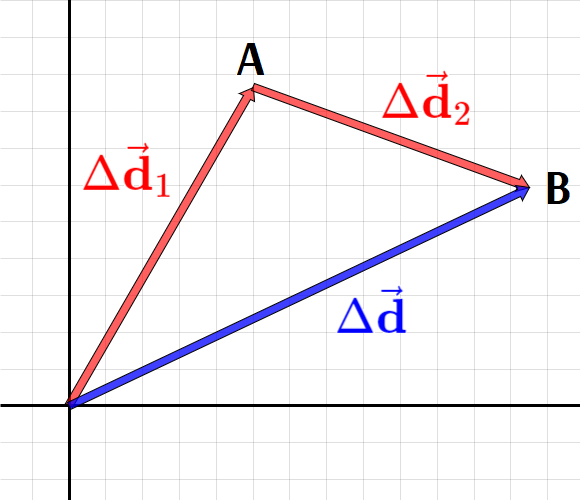
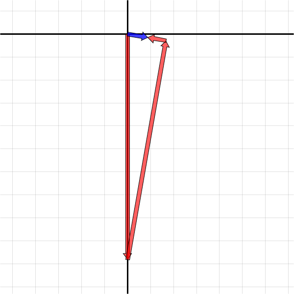

Vector Diagram
A vector diagram is a tip-to-tail illustration of two or more vectors being added.
Example: Illustrate the displacement of an object that moves 50 m [60°] and then 40 m [340°].

1 square = 5 metres
- We can take the original starting point as the origin.
- The object moves from the origin to “A” and then continues to “B”.
- Note that the second part of the displacement begins from the point (“A”) where the first displacement ends.
- The object’s total displacement is from its original starting point (origin) to its final end point (“B”).
- This vector, representing the sum of the two vectors, is called the resultant vector.
- Because \(\Delta{\vec{\mathbf{d}}}_1\) and \(\Delta{\vec{\mathbf{d}}}_2\) have different directions, the magnitude of the resultant vector will not equal the magnitudes of the two vectors added together.
- The distance travelled may be 90 m, but the magnitude of the displacement will be smaller.
- If we draw the vector diagram carefully using a protractor, ruler, and graph paper, we can measure the resultant vector from the diagram.
- This is called the graphical method of vector addition.
- The accuracy of this method is limitted by how precisely we can draw and measure.
Component Method
A more accurate and reliable method of vector addition is the component method.
- Convert each vector to Cartesian form:
$$\Delta{\vec{\mathbf d}}_{1x} = 50\ {\mathrm m}\cdot\cos(60^\circ) = 25\ {\mathrm m}$$
$$\Delta{\vec{\mathbf d}}_{1y} = 50\ {\mathrm m}\cdot\sin(60^\circ) = 43\ {\mathrm m}$$
$$\Delta{\vec{\mathbf d}}_{2x} = 40\ {\mathrm m}\cdot\cos(340^\circ) = 38\ {\mathrm m}$$
$$\Delta{\vec{\mathbf d}}_{2y} = 40\ {\mathrm m}\cdot\sin(340^\circ) = -14\ {\mathrm m}$$
- Now total the \(x\)- and \(y\)-components independently:
$$\Delta{\vec{\mathbf d}}_x = \mathrm{25\ m + 38\ m = 63\ m}$$
$$\Delta{\vec{\mathbf d}}_y = \mathrm{43\ m + (-14\ m) = 30\ m}$$
- You can convert the answer back to polar form if necessary.
Trigonometry Method
You could also find the resultant vector by solving the triangle using trigonometry.
- Because the triangle does not contain a right angle, you must use the Law of Cosines and Law of Sines.
- This method is never required; you can always use the component method.
- For some problems the trigonometry method may be easier, especially when the triangle does contain a right angle.
Summary
The procedures for adding vectors and drawing vector diagrams (“tip-to-tail”) are not just for displacement vectors but for any kind of vector, including velocity, acceleration, and force.
To subtract a vector, add its negative.
- In Cartesian form, reverse the sign of both components.
- In polar form, add or subtract 180º to the direction.
Example
Calculate the acceleration of a 10.0-kilogram mass that experiences a normal force of 96.6 N [80.0°] and a friction force of 8.00 N [170°] in addition to gravity.

| Force | \(|\vec{\mathbf F}|\) / N | \(\theta\) | \(\vec{\mathbf F}_x = |\vec{\mathbf F}|\cos\theta\) | \(\vec{\mathbf F}_y = |\vec{\mathbf F}|\sin\theta\) |
|---|---|---|---|---|
| Gravity | 98.1 | 270° | 0 | –98.1 |
| Normal | 96.6 | 80.0° | 16.8 | 95.1 |
| Friction | 8.00 | 170° | –7.88 | 1.39 |
| Net | 9.04 | 350° | 8.90 | –1.57 |
Now use Newton’s 2nd Law: $$\vec{\mathbf a} = {\vec{\mathbf F}_{net} \over m}$$
The acceleration is 0.904 m/s2 [350°] in polar form, or (0.890, –0.157) m/s2 in Cartesian form.